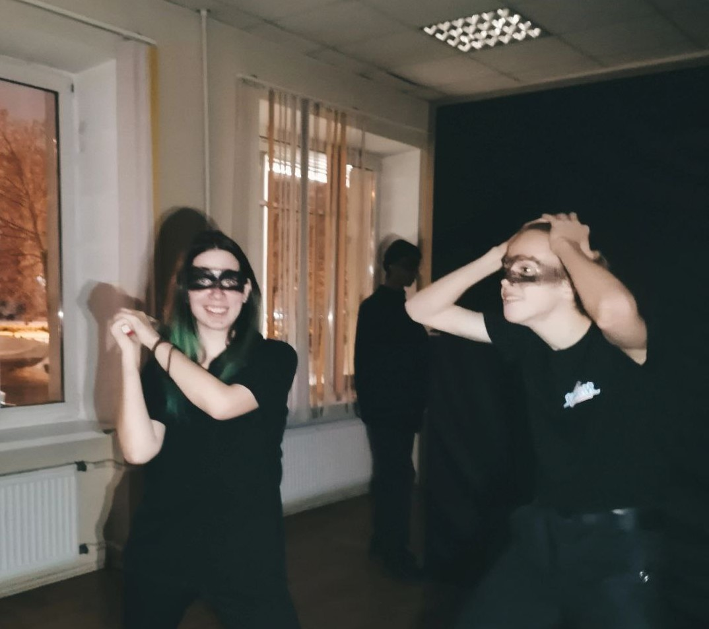

Театр - очень важная часть моей жизни.
В настоящее время я являюсь администратором Театральной Студии ГУАП.
Заниматься театром я начла в 2017 году, в школе и с тех пор не могу жить без этой деятельности. В то время я сыграла в 2-ух спектаклях: второстепенная и главная роли.
Едва поступив в университет сразу влетела в театральную студию. Это был совсем иной опыт, чем в школе. В ТЕАТР ГУАП мы очень много делаем самостоятельной работы, экспериментируем и развиваем свои навыки.
В 2023 году я приняла роль одного из двух администраторов Театральной Студии ГУАП

На самом деле, ТЕАТР ГУАП для меня стал не просто хобби или досугом.
Для меня это семья.